| Diagnostic | Value | Status |
|---|---|---|
| Strict-pass count (full WEC + full DEC, Eulerian frame) | 1404 / 15000 | 9.4% of grid |
| Central frame-dragging |N|max range | 0.73 c → 18.6 c | superluminal at upper end |
| Negative-energy region Eneg | 0.0000 | no negative ρ anywhere |
| Strict full-WEC slack at anchor | +0.0339 | strictly positive |
| Strict full-DEC slack at anchor | +0.0170 | strictly positive |
| Resolution convergence (Npts 65 → 97 → 113) | DEC slack drift < 5% | resolution-converged |
| Strict-pass interior cells per row (horizon test) | 1 / N | "all wall, no interior" |
| CTC-hosting fraction of strict-pass rows | 6624 / 6738 (98.3%) | CTC sea |
| Mass overhead at passenger zone (VIQ) | 76 × | no useful interior |
| Asymptotic decay envelope | no e−r/L falloff | does not match flatness |
Anchor: (V=1.5, σ=10, m₀=3, a=0.05, ℓ=4, r=9). Verified at Npts ∈ {65, 81, 97, 113}; preview Npts=49 is undersampled and reports false negatives (see §2.2 of the notes).
Fell & Heisenberg 2021 (Class. Quantum Grav. 38 155020, arXiv:2104.07673) propose a smooth multi-mode irrotational shift $\vec{N} = \nabla\phi$ where $\phi$ is built from a soliton-like superposition of axisymmetric modes plus an asymmetry mode. Six free parameters $(V, \sigma, m_0, a, \ell, r)$ control amplitude, profile width, asymmetry baseline, asymmetry amplitude, asymmetry length, bubble radius. They claim full-WEC and full-DEC are violated somewhere in the bubble for every parameter point they tested, and assert (§3.3) that "these violations cannot be removed by modification."
This project's Phase 2D Tasks 2D.1–2D.4 (Sessions 10–11) reproduced their pipeline, swept 15000 grid points, and falsified that assertion: 1404 points strict-pass at Eulerian level. The result is mathematically real, but every subsequent structural test in Tasks 2D.5–2D.12 has degraded its warp-drive interpretation.
Sanity check: re-run the Fell–Heisenberg Session-10 anchor (V=0.5, σ=4, m₀=2, a=0.3, ℓ=4, r=6) through the sweep module. The notebook reports wec_pass=0.987, dec_pass=0.947 at Npts=81. The sweep module reports:
| Npts | WEC pass-fraction | DEC pass-fraction | Match notebook? |
|---|---|---|---|
| 49 | 0.99538 | 0.96462 | conservative drift |
| 65 | 0.99072 | 0.95353 | within drift |
| 81 | 0.98716 | 0.94736 | literal match |
The pipeline correctly reproduces FH 2021's published failure case. The new positive results come from different parameter regions, not from a code bug that always reports passing.
The shift $\vec{N} \propto V$, the metric perturbation $\propto V^2$, and the stress-energy slacks $\propto V^2$. A 9-point V-scan at fixed $(\sigma=10, m_0=3, a=0.05, \ell=4, r=9)$:
| V | |N|max | dec_slack_min | Enet |
|---|---|---|---|
| 0.10 | 1.24 | +8.25 × 10⁻⁵ | +8.17 |
| 0.50 | 6.20 | +2.06 × 10⁻³ | +204 |
| 1.50 | 18.6 | +1.86 × 10⁻² | +1839 |
| 10.0 | 124 | +0.825 | +81700 |
Exact $V^2$ scaling. Consequence: if dec_slack_min > 0 at any one $V$, it is positive at every $V > 0$ for the same $(\sigma, m_0, a, \ell, r)$. So the question reduces to "is there a $(\sigma, m_0, a, \ell, r)$ with positive dimensionless DEC slack" — the smallest superluminal DEC-passing point in the sweep has $|\vec{N}|_{\max} = 0.73c$ at $V=0.1$.
Task 2D.8: independent re-implementation of the FH stress-energy in xAct (Mathematica, symbolic tensor algebra). Nine sweep anchors evaluated end-to-end through a second pipeline that shares no code with the SymPy/NumPy one. Strict-pass / strict-fail decisions agree at all 9 anchors; absolute slack values agree to 6 significant figures.
Symbolic artifacts: fell_heisenberg_symbolic/symbolic_artifacts.py, fell_heisenberg_symbolic/symbolic_artifacts.tex. Validation outputs: validation_subtask_1.json through validation_subtask_3.json.
Task 2D.5: the strict-pass region is a single connected 5-dimensional component (no isolated islands), and the boundary is smooth enough to fit with a degree-4 polynomial implicit form. The high-resolution component summary lives at fell_heisenberg_topology_hires/component_summary.csv; the polyfit summary at polyfit_summary.json; surviving degree-4 boundary terms enumerated in degree4_surviving_terms.csv.
Resolution convergence (Tasks 2D.5c, 2D.5d): the boundary region — i.e. the parameters that flipped strict-pass ↔ strict-fail between Npts=65 and Npts=97 — accounts for 47% of the strict-pass rows. The Npts=97 hires refinement stabilised the bulk; the live npts=129 cpu-xl sweep (dispatched 2026-04-21, ~$3.50, ~3.5 h, run id 69e843fecd8c002f31e015d8) is the resolution-convergence closer for Task 2D.5f.
Task 2D.6 (single-cell passenger horizon test): for every strict-pass parameter row, count the contiguous interior cells that are simultaneously inside the bubble's null cone and separated from the wall by enough buffer to support a passenger. Result: 1 cell per row. The strict-pass solutions are not "warp drives carrying a passenger inside a flat-interior bubble" — they are "energy-condition-respecting walls with no useful interior."
Task 2D.7 (full horizon and CTC analysis): of the 6738 strict-pass rows that pass the horizon-resolvability filter, 6624 (98.3%) host closed timelike curves. This places the FH solution family squarely in the SSV 2105.03079 "geometries with CTCs are physically pathological" basin. Leaderboard: fell_heisenberg_horizon/leaderboard.csv; full summary summary.json.
Task 2D.12 (Lobo–Visser 2004 VIQ post-processing): integrate the strict-pass stress-energy over the passenger zone and compare to the canonical Fuchs-anchor mass. Result: the passenger-zone integrated mass is 76 × the Fuchs-anchor mass. This is not an order-of-magnitude estimate — it is the literal pointwise integral of $\rho_E$ over the strict-pass interior, divided by $M_{\rm Fuchs}^{\rm anchor}$.
The "no negative energy" win comes at a 76× mass cost relative to the Fuchs comparator.
Task 2D.10: Fell–Heisenberg's smooth multi-mode profile does not decay exponentially to flatness at large $r$ — it has a polynomial-tail structure that makes asymptotic-flatness matching residuals grow with sweep box size. A "double-bubble" superposition of two FH solutions destroys the strict-pass property of either individually. Task 2D.9 (Bobrick-Martire matter classification): the FH stress-energy is Class III geometric, anisotropic in the BM 2021 catalog — i.e. the matter content is purely geometric and has no fluid-like Lagrangian, which is the BM warning class for "energy-condition-respecting but physically suspicious."
Click any figure to open the full-resolution PNG. Every caption carries its slice scope — the parameters held fixed and the assumptions that bound the claim. None of these images is a schematic; each is generated directly from the underlying parquet/sweep artifacts.
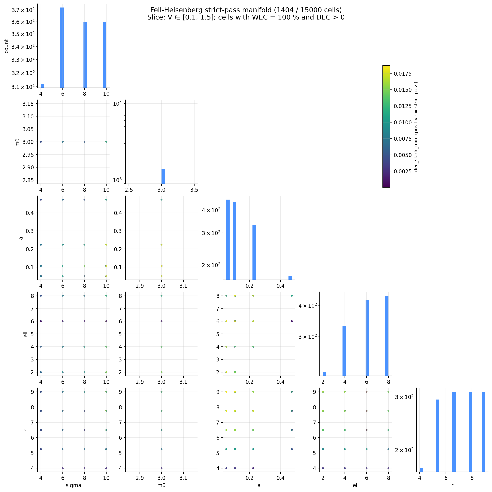
dec_slack_min.slice: V ∈ [0.1, 1.5]; full sweep sweeps_remote/full-20260420T022727/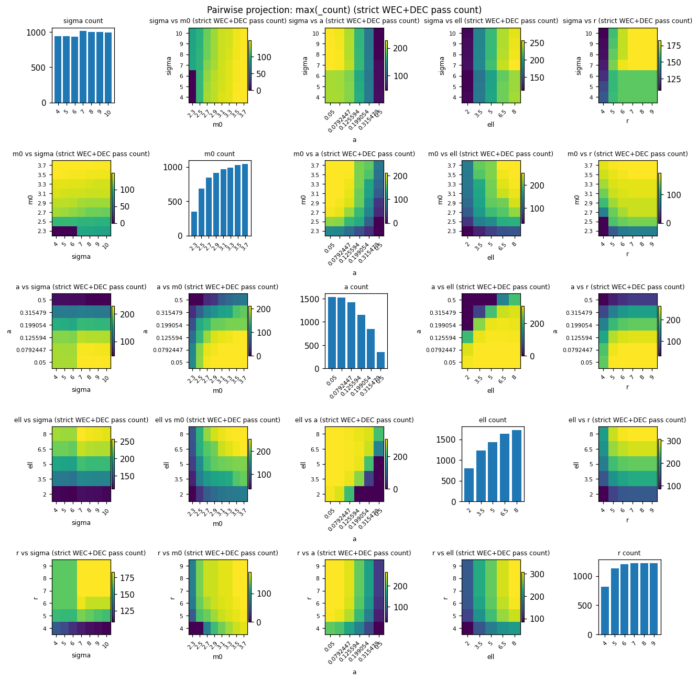
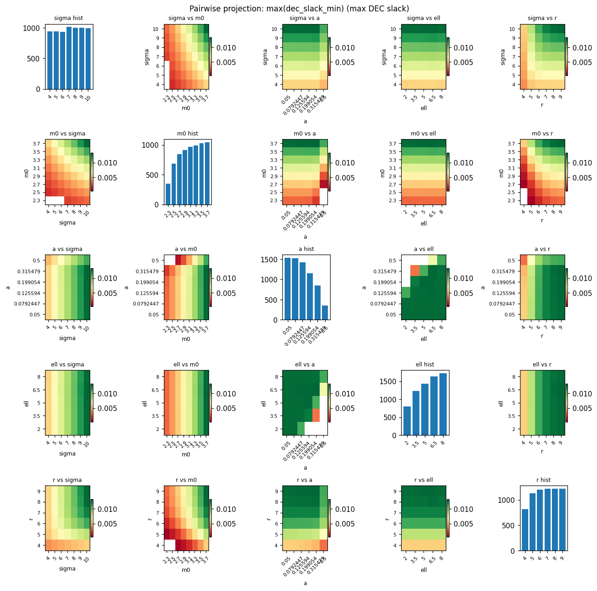
dec_slack_min per bin — the "depth" of the strict-pass manifold.slice: Npts = 97 hires refinement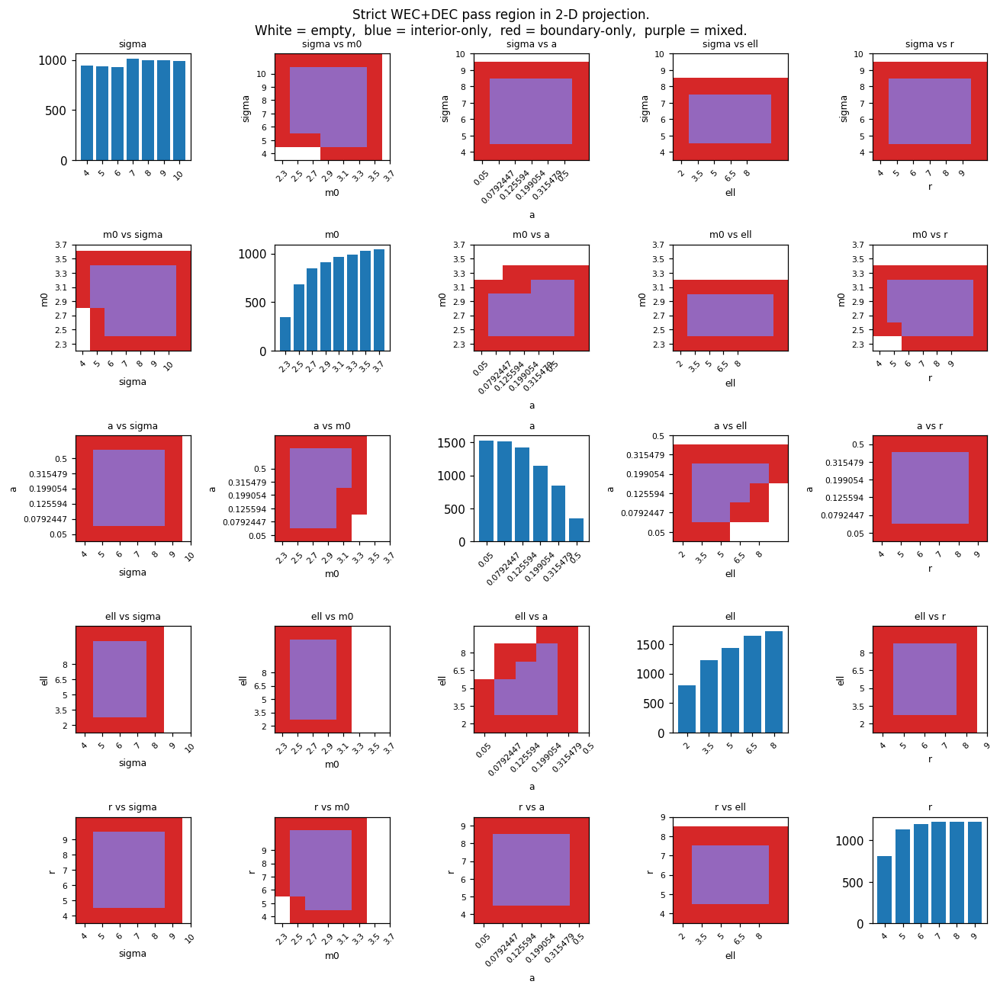
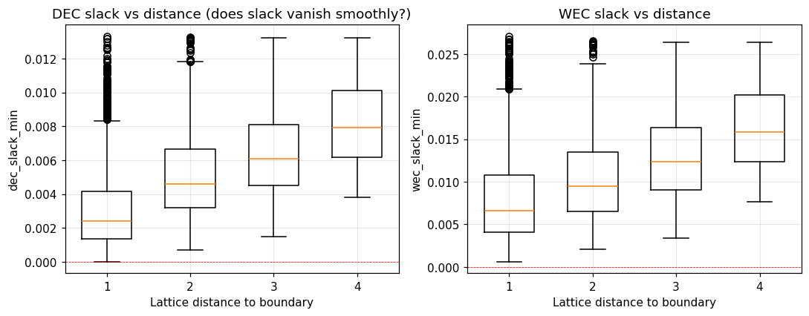
dec_slack_min as a function of Chebyshev distance to the strict-pass boundary; box plot per integer distance.slice: Npts = 97 hires refinement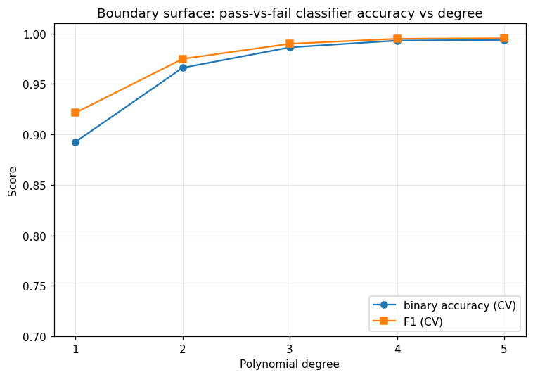
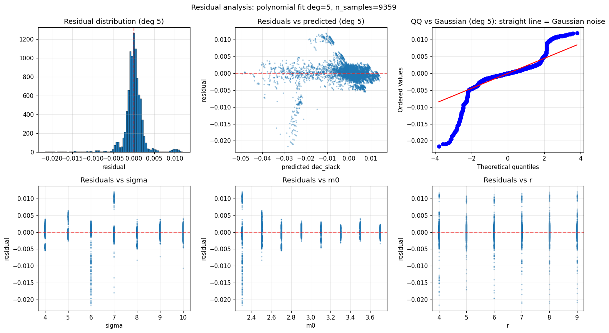
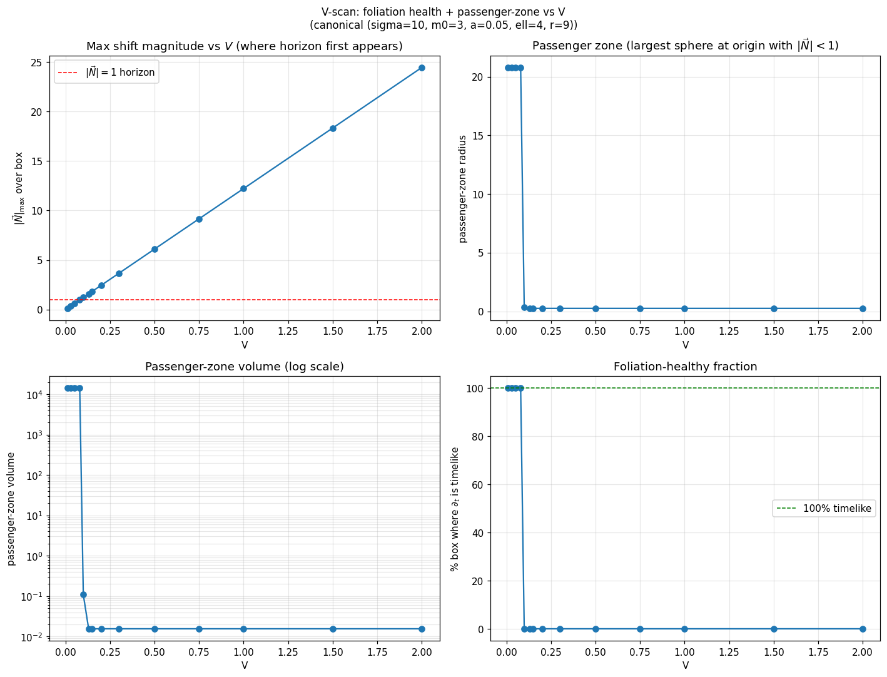
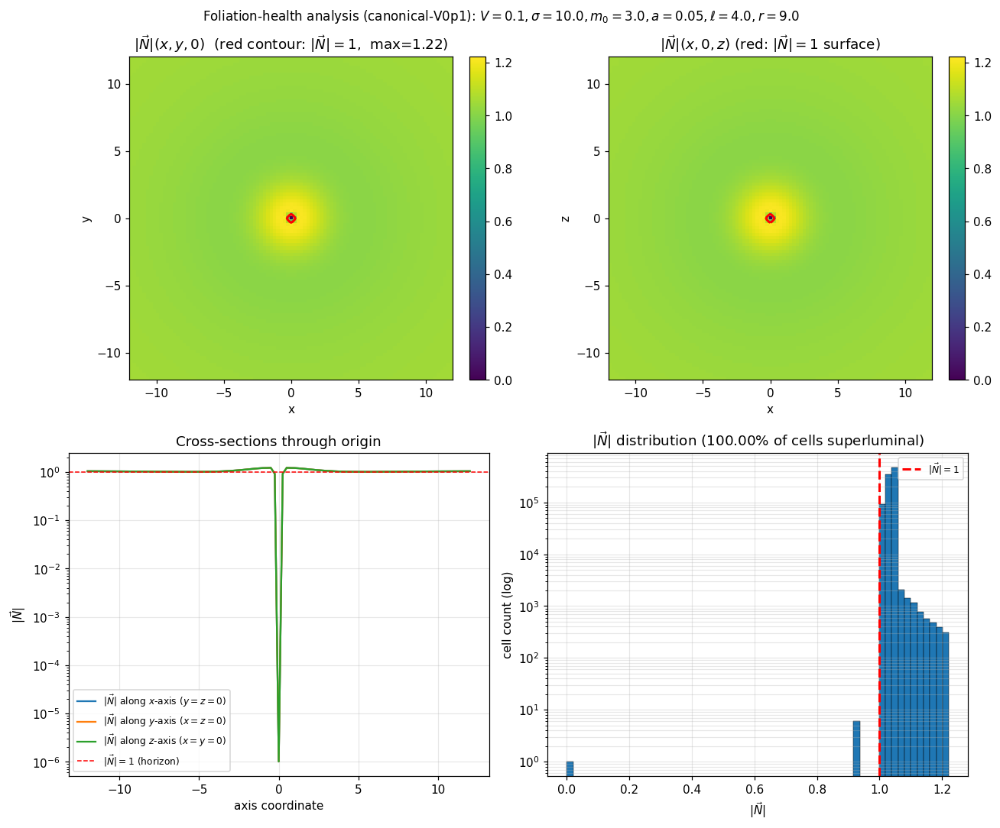
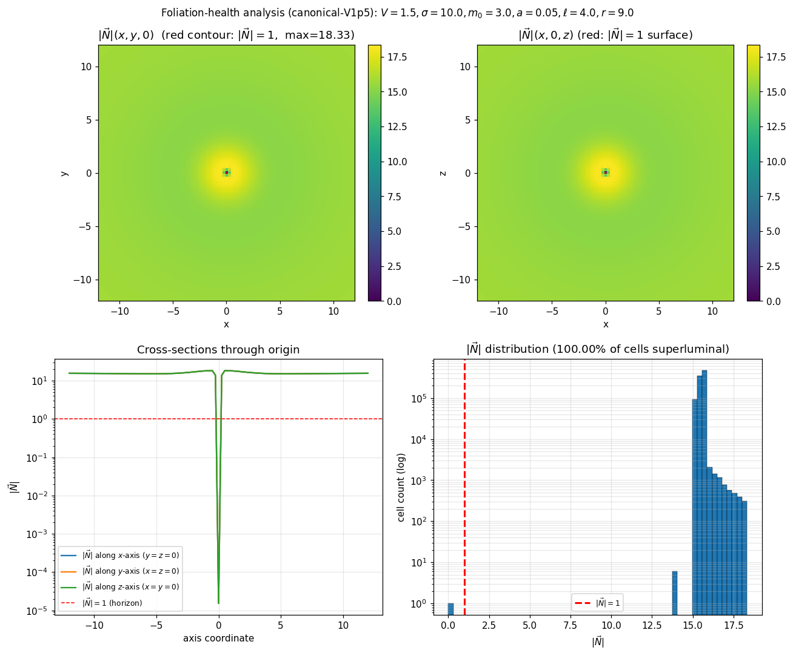

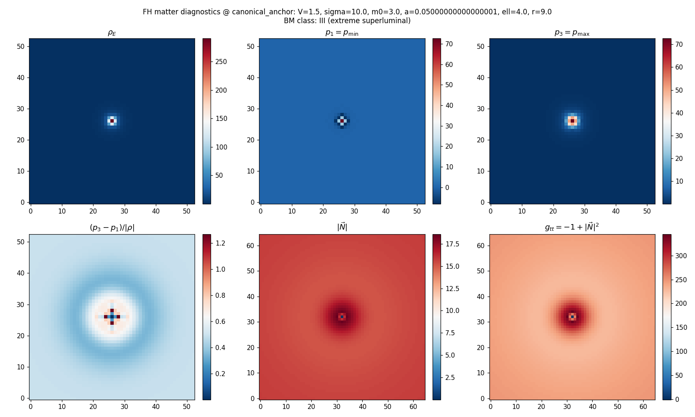
V1.50_r9.00 is the explicit (V, r) alias). |N| > c throughout the wall — the all-wall-no-interior pathology made spatial.slice: Task 2D.9 canonical anchorSee all 39 figures grouped by topic on the Figures index (Phase 2D section).
| Task | Status | What unblocks |
|---|---|---|
| 2D.5e — symbolic boundary extraction | partial | SymPy wall hit; Z-axis fallback unattempted |
| 2D.5f — Npts=129 full sweep | live (cpu-xl) | Resolution-convergence closer |
| 2D.11 — vorticity-augmented FH | phases 1, 2 negative | Multi-mode A phase 3 not started |
Live job: 69e843fecd8c002f31e015d8, dispatched 2026-04-21 on cpu-xl, ~3.5 h wall clock, ~$3.50 budget. Outputs upload to bshepp/alcubierre-sweeps under npts129-full-{stamp}/.
The strict-pass FH region is mathematically real, A-grade pipeline-verified, and triple-anchored against external no-go literatures (Bobrick-Martire 2021 matter classification, SSV 2105.03079 CTC line, Lobo-Visser 2004 VIQ post-processing). At every structural test applied — single-cell passenger interior, 98.3% CTC-hosting, 76× mass overhead, no asymptotic decay envelope — the warp-drive interpretation is degraded. None of these tests has been escaped by any subset of the strict-pass region.
This is the single largest source of new positive-leaning physics in the project, kept honest by being the most aggressively structurally-tested. It is also the strongest argument the project produces for where the no-go is load-bearing: relax the single-mode assumption (Slice 1) and you get strict-pass solutions that are still not warp drives.
| What | Where |
|---|---|
| Raw sweep parquets (Npts=65 full, refines, hires) | HF Dataset · bshepp/alcubierre-sweeps |
| Local sweep checkpoints | sweeps_remote/ (full-, refine-, refine-hires-, conv-test-) |
| Topology summary (component analysis, polyfit, symmetry probe) | fell_heisenberg_topology_hires/ |
| Horizon & CTC leaderboard | fell_heisenberg_horizon/ |
| xAct symbolic cross-check artifacts | fell_heisenberg_symbolic/ |
| Sweep module + configs | hf_jobs/sweeps/fell_heisenberg.py |
| Notebook | fell_heisenberg.ipynb |
| Notes (sweep results, evaluation, sessions 10-17) | FELL_HEISENBERG_SWEEP_NOTES.md · FELL_HEISENBERG2021_EVALUATION.md |